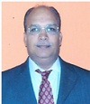

The Department of Civil Engineering has program in three premises of VTU, Belagavi, Two programs in
Kalaburgi
namely Construction Technology and Highway Technology, Two programs in Belagavi namely Water and Land
Management and Structural Engineering,
and One program in Mysuru namely Structural Engineering.
The department has well qualified faculty members with required infrastructure facilities such as class
rooms fitted with LCD,
smart boards, speaker system wherever necessary, computing facility, laboratory, library, hostel for boys
and girl students.
Department office has been established with qualified clerical assistance and desired number of attenders.
Department encourages both its faculty and students to participate in academic activities such as attending
conferences, Seminars,
workshops etc and present papers on various platforms. It appreciates faculty and students for the
publication of articles in various
International and National Journals.
Department conducts atleast two Workshops or Faculty Development Activities every year and faculty members
are continuously
engaged in consultancy and research activities. Most of its faculty members have received recognition as
reviewer for journals and are
awarded distinctions and recognitions from different organizations.
CHAIRPERSON

Dr. ANAND VEERAPPA SHIVAPUR
Professor of Water and Land Management,
Chairman, Department of Civil Engineering,
Visvesvaraya Technological University,
Belagavi-590 018
Phone No. 0831- 2498251, 2498198.
Fax No. : 0831-2498253.